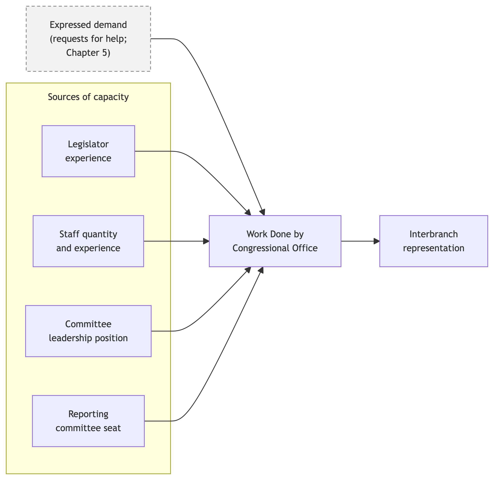
6 How Congressional Capacity Affects Interbranch Representation
ABSTRACT: How does the capacity of congressional offices shape interbranch representation? Legislators can respond to constituent demand and generate work of their own only to the extent their offices have the ability to do so. We test four sources of capacity: legislator experience, staff, committee leadership positions, and seats on an agency’s reporting committee. Because many of these change over a legislator’s career, we compare legislators with one another and also compare the same legislator before and after their capacity changes. We find that capacity matters. Capacity that comes from experience in Congress and larger staff increases many types of interbranch representation. Capacity that comes from committee roles (leadership positions or a seat on an agency’s reporting committee) increases general policy work.
In Chapter 5, we examined the first element in our framework of interbranch representation: constituent demand, where we found that demand can explain some, but not all, of the variation in interbranch representation. Legislators can only respond to constituent demand if they have sufficient ability to do so. That ability is captured in our concept of capacity, which is the second element in our framework of interbranch representation, and the focus of this chapter. Hypothesis 2 (Capacity), introduced in Chapter 2, holds that congressional offices with more capacity will do more interbranch representation. A number of different factors are likely to affect a legislator’s capacity, or the ability of their office to produce work. These include factors that pertain to legislators themselves, such as their experience in office and their committee leadership positions, as well as factors related to the congressional office more broadly, like the number and experience of the staff. We include all of these measures as different facets of capacity.
As Figure 6.1 shows, capacity sits between demand and work: the requests for help that constituents send become interbranch representation only to the extent that an office has the ability to act on them. Capacity also enables offices to generate interbranch work of their own, such as policy work and oversight that no constituent requested.
In the following sections, we discuss our four sources of congressional capacity: legislator experience, legislators’ staff, committee leadership roles, and reporting committee seats. We develop sub-hypotheses for how each of these sources of capacity relate to the provision of different forms of interbranch representation. We test these hypotheses using both cross-sectional and difference-in-differences models. We find capacity matters, and see two consistent patterns: capacity that comes from experience and a larger staff increases many types of interbranch representation, while capacity that comes from committee work, whether a leadership position or a seat on an agency’s reporting committee, increases general policy work, but not constituency service.
6.1 Four Sources of Capacity
Legislator Experience
Like anyone starting a new job, legislators face start-up costs such as how to organize their office, develop efficient routines, and make connections. As Judge-Lord et al. (2026) documented, much of the start-up costs (especially for constituency service) occur in the first two years of legislators’ tenure.
We can think of legislator experience as coming from both experience within the chamber (seniority) and from experience in politics itself. An alternative conceptual approach to direct congressional experience within the chamber is thinking about political amateurism — politicians new to politics itself. For example, a freshman member of Congress might be new to Capitol Hill, but could have served previously on a city council and in their state legislature, during which they could have gained experience with analogous forms of interbranch representation. Congressional research has examined the impact of political amateurism in both congressional campaigns and in the work of Congress itself (Canon 1990; Porter and Treul 2025, 2026; Porter et al. 2025), but has yet to explore the impact of political amateurism on interbranch representation specifically.
Hypothesis 2A (Experience). Legislators with more experience, whether from time served in Congress or from prior service in a state legislature, will be associated with higher levels of interbranch representation.
Staff
Unlike legislative work, where a legislator might choose to be more hands-on, the vast majority (if not all) of interbranch work in the contemporary period is carried out by congressional staff. While legislators played a much greater role in interbranch representation in earlier eras of congressional history (Olson 1966), today staff do most of the work.1 Research shows that other aspects of congressional work — legislative committee productivity and individual legislator effectiveness — are impacted by staff experience and staff budget allocation (Cottle 2022; Ommundsen 2025; Montgomery and Nyhan 2017; Crosson et al. 2020; Reynolds 2020). Personal office staffing has changed substantially over Congress’s history (Figure 6.2). Members of the House are limited to 18 permanent employees and may only fill 12 due to a limited budget that has been declining since 2010 (Reynolds 2020).
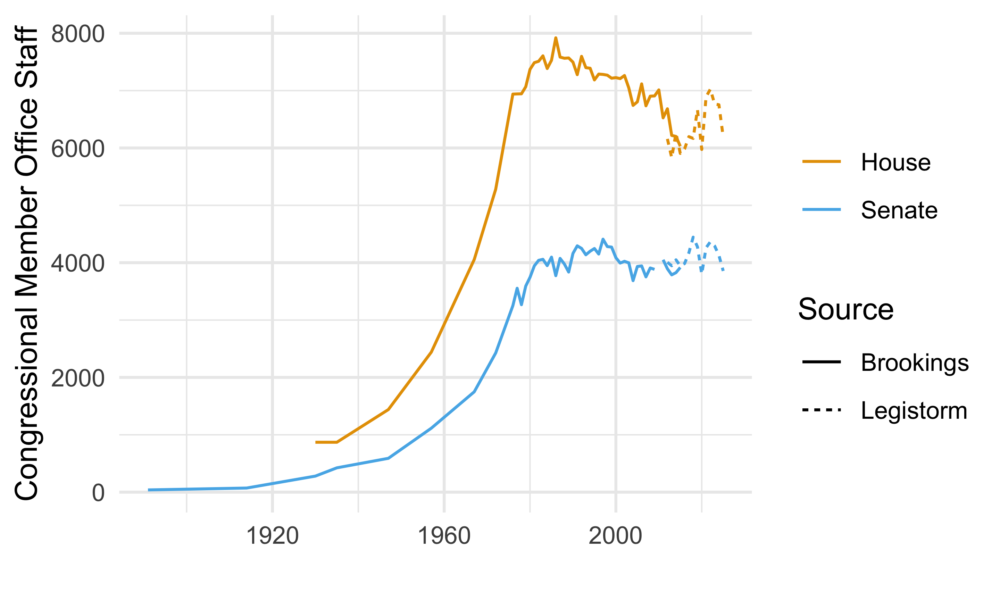
Offices also differ considerably in both the number of staff they employ and how much congressional experience those staff bring (Figure 6.3). Each thin line in the figure traces a single congressional office over time; blue lines show offices in a legislator’s first Congress, and orange lines show established offices. Staff size varies widely, especially in the Senate, where some offices employ fewer than 40 staff and others more than 100 (Figure 6.3 (a)). New offices are also smaller: senators in their first Congress employ about 15 fewer staff than established Senate offices, on average, and new House offices are slightly smaller than established ones. Staff experience varies even more (Figure 6.3 (b)). New offices start with little accumulated experience and build it over the course of their first Congress, producing the sawtooth pattern of freshman legislator offices starting each Congress at the bottom of the trendlines (dark blue lines). In contrast, established offices range from fewer than 100 to more than 750 combined years of congressional experience. We argue that a larger staff and more experienced staff have the capacity to provide more interbranch representation. In this book, we examine three aspects of congressional staffing that impact interbranch representation: the number of staff, total staff experience, and average staff experience.
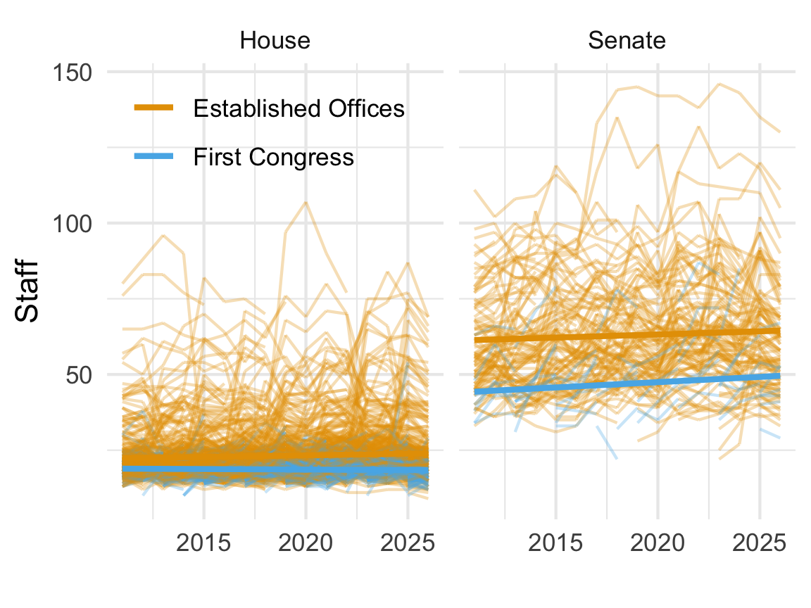
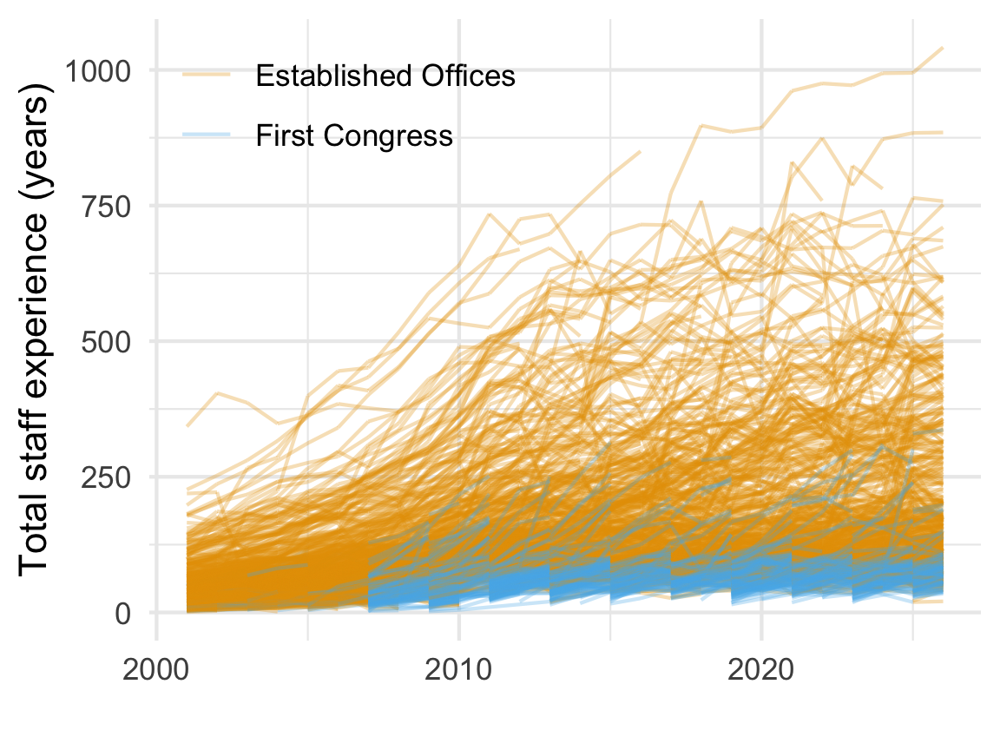
Hypothesis 2B (Staff). Legislators with more staff capacity (more staff, more total staff experience, or more experienced staff on average) will be associated with higher levels of interbranch representation.
Examples from our data provide additional justification for our expectations in this hypothesis, particularly regarding staff experience. Some staff appear to have gone out of their way to contact a federal agency for a constituent. Some requests on behalf of individual constituents did not have an obvious connection to a certain federal agency; others did not require action from an agency. In both kinds of situations, legislators’ staff contacted the agency on behalf of the constituent anyway. For example, Bernie Sanders (I-VT)’s office sent a comment from a constituent regarding the H-2A Temporary Agricultural Workers Program to the Office of Congressional and Intergovernmental Affairs within the Department of Labor. Unlike other letters on behalf of individual constituents about the H-2A program, the DOL-OCIA logs did not discuss any particular action or request from the constituent in their summary of this correspondence, indicating that Sanders’s office was simply forwarding a constituent’s opinion to the agency. This letter suggests that Sanders’s constituency service staff knew that contacting DOL was an action that they could take in response to this constituent’s comment.2
Other examples show that legislators’ offices are sometimes persistent in contacting a federal agency on behalf of a constituent, which also speaks to experience and capacity on the part of the staffers who do this work. For instance, Tom Udall (D-NM)’s office sent a letter to DOL-OCIA on August 4, 2011, on behalf of a constituent who was experiencing issues with Energy Employees Occupational Illness Compensation Program (EEOICPA) benefits; their office then sent a followup letter about the same issue to the agency on September 9, 2011. Similarly, Maria Cantwell (D-WA)’s office sent a letter to DOL-OCIA on September 8, 2011 regarding “follow-ups to constituent inquiries”—apparently a catch-all correspondence indicating a followup on many outstanding constituent requests. Thus, in situations in which the congressional office did not receive a timely response from the agency, staff members were capable of following up to try to produce a response.
Interestingly, there appears not to be a standard amount of time for which legislative offices will wait before sending a followup request to an agency, as the gaps between letters about the same issue vary from a few weeks to several months. Mike Rounds (R-SD)’s office sent two letters on behalf of a constituent—an initial letter on December 5, 2016 and a followup letter on December 21, 2016—to the Indian Health Service (IHS) on behalf of a constituent who was requesting information about her mother’s injury at an IHS dialysis unit. Heather Wilson (R-NM)’s office, on the other hand, sent a letter to the IHS on February 14, 2007 regarding previous letters sent to the agency on behalf of their constituent on October 30 and December 20 of 2006. The variation in these gaps between followup requests suggests that congressional offices are using their knowledge of the individual case at hand (and maybe their knowledge of the agency involved) when determining when to send followup correspondence.
Committee Leadership
Legislators’ committee leadership positions also shape the capacity of their offices. We are primarily focused on committee positions—committee chairs, ranking members, and subcommittee chairs. Committee chairs direct committee staff in addition to their own personal staff. While committee staff are at least theoretically limited to working on committee business, one might imagine a legislator could reallocate their personal office staff differently, and that staffers working for the same legislators (committee and personal office) could force closer connections and help provide knowledge and expertise to one another. Empirical research shows that this additional staff capacity increases both policy work (Ritchie 2018, 2023; Judge-Lord et al. 2026) and constituency service (Judge-Lord et al. 2026). An alternative interpretation of any potential relationship between institutional position and interbranch representation is also possible — that committee chairs are more powerful, and they anticipate the bureaucracy will respond better to them.
Hypothesis 2C (Committee Leadership). Legislators who hold committee leadership positions will be associated with higher amounts of policy work.
Reporting Committees
All executive branch agencies “report” to one or more congressional committees charged with overseeing their work. In congressional lingo, these relationships are called the “Reporting Committees” for a federal agency. Congressional committee assignments provide members with information and the opportunity to gain substantive expertise about a policy area, including the agencies that a committee oversees (Lewis and Selin 2012). Both chambers also have an “oversight” committee that focuses on a small number of investigations, usually of scandals or other alleged wrongdoing. Reporting committees are different. While we often focus on the role that the oversight committees play in overseeing the executive branch, other committees also play a role in oversight. They may investigate perceived problems with the agencies they oversee. Indeed, oversight hearings—the classic example of congressional oversight—are often conducted by reporting committees. However, these committees also provide coverage over nearly the entire executive branch, dividing the work of monitoring and developing policy targeting particular agencies. Members of Congress have an especially close relationship with the agencies that report to their committees. These substantive committees are also charged with overseeing agencies within their policy area. In addition to gaining substantive expertise in the policy area and expertise about the agency itself, members sitting on these committees have access to committee staff for substantive policy information about issues and agencies in the committee’s wheelhouse. We consider sitting on a committee to which the agency reports (a form of oversight) as expanding that member’s capacity with regard to that agency.
Interbranch representation includes many forms of agency oversight. Only a small proportion of Congress-agency interactions rise to the levels of hearings and investigations. Instead, as Lowande (2018) and Lowande and Potter (2019) demonstrate, most congressional interventions happen in direct communication between legislators and agencies. Legislators who sit on congressional committees overseeing an agency are likely to engage in higher levels of interbranch representation with that agency. We think this relationship is likely to exist for two reasons. First, legislators are likely to be substantively interested in that policy area to have received a seat on that committee. Second, their responsibility as committee members may also lead them to engage in higher interbranch representation with agencies under the committee’s jurisdiction. While notions of policy-focused interbranch representation might immediately spring to mind, constituency service can also be a congressional oversight strategy (Johannes 1979).
Hypothesis 2D (Reporting committee). Legislators who sit on the reporting committee for the agency will be associated with higher amounts of policy work with that agency.
A challenge that complicates our interpretation of this relationship is that a committee seat on a reporting committee may capture more than capacity. Members may have prior expertise in a policy area that helped them win the committee assignment in the first place. This would still fall under capacity, but capacity from a prior experience rather than from the committee relationship itself. For example, a veteran might seek to be on the Armed Services Committee, or a farmer might want to be on the Agriculture Committee. A reporting committee seat could also reflect strategic behavior in that legislators may seek out committee assignments that oversee parts of the government they (or their constituents) care about. Legislators may also choose to invest in oversight work with agencies those committees oversee. We will return to this ambiguity when interpreting our results, where comparing cross-sectional and within-legislator estimates can help to distinguish between these explanations.
6.2 Measuring Capacity
All of our models use legislator-agency-year observations. Most capacity measures vary across legislators and years, but are the same for all agencies a legislator contacts. Reporting committee seats also vary by agency, since they indicate whether a legislator sat on a committee overseeing that particular agency in that Congress. For legislator experience, we use an indicator of whether a legislator has served more than two years in Congress, since Judge-Lord et al. (2026) find that most start-up costs occur in the first two years. For legislative experience prior to serving in Congress, we use an indicator of whether the legislator previously served in a state legislature, from Volden and Wiseman (2014) and Volden and Wiseman (2018). Empirically, almost half of members of Congress enter Congress with such experience.
We measure staff capacity using data from LegiStorm (LegiStorm 2026), a commercial database of congressional staff that is widely used commercially and in congressional research (Crosson et al. 2020). We use their staff data to count the number of staff each legislator has, but also to measure the experience of their staff. Measuring staff experience is surprisingly difficult from the raw records reported by Congress, because of the need to link individual staffer records over time as they move between offices, committees, and chambers. This linkage is especially challenging for the staffers—mostly women—who change their last names upon marriage or divorce. LegiStorm’s records attempt to link the same staff member across positions and over time, which allows us to measure each staffer’s cumulative experience in Congress rather than only their tenure in a single office. An important limitation with their staff experience measure has to do with when they began collecting congressional staff data systematically, which wasn’t until 2011. Although it has tried to fill in staff employment from earlier years, that history is incomplete, so our measures undercount the experience of staff who worked in Congress before 2011. This known undercount of staffer experience is more problematic early in our period and fades over time. It potentially undercounts experience for offices with a high level of staff retention, which are generally concentrated in the offices of more senior legislators. The missing experience makes experienced and inexperienced offices look more alike in experience than they really are, which we expect to bias our staff experience estimates toward zero. We, therefore, interpret any null results for staff experience with caution.
To measure committee leadership positions, we combine several existing sources and augment them with additional research into the committees members sit on. The result is a new dataset on committee assignments, including committee chair, ranking minority member, subcommittee chair, and other leadership positions (updating Stewart and Woon 2017).3 Finally, to identify reporting committee relationships, we crosswalk committee assignments with committee jurisdictions using the ACUS Sourcebook of United States Executive Agencies (Lewis and Selin 2012). This gives us an indicator for each legislator-agency pair of whether the legislator sat on a reporting committee with oversight jurisdiction over that agency in each Congress.
Table 6.1 summarizes how we measure each source of capacity and what each indicator predicts.
| Sub-hypothesis | Indicators | Predicted relationship |
|---|---|---|
| Hypothesis 2A (Experience) |
More than two years in Congress Prior state legislative service |
↑ all types |
| Hypothesis 2B (Staff) |
Senate (vs. House) Staff count Total staff experience Average staff experience |
↑ all types |
| Hypothesis 2C (Committee leadership) |
Committee chair Ranking member Subcommittee chair |
↑ policy work |
| Hypothesis 2D (Reporting committee) |
Seat on the agency’s reporting committee | ↑ policy work, with that agency |
6.3 Results
To estimate how each source of capacity relates to interbranch representation, we use the same approach as in Chapter 5: we model the number of contacts of each type that a legislator’s office makes with each federal agency in a given year, using negative binomial regressions with standard errors clustered by legislator. Each model includes all of the capacity measures, along with controls for demand and strategic incentives discussed in chapters Chapter 5 and Chapter 7.
Unlike the demographic characteristics we examined in Chapter 5, many sources of capacity change over a legislator’s career: legislators gain experience, hire and lose staff, and win or lose committee leadership positions. We estimate two kinds of models. Cross-sectional models compare legislators with more capacity to legislators with less. Within-legislator (difference-in-differences) models, which include legislator-agency and year-agency fixed effects, compare the same legislator’s interbranch representation before and after their capacity changes, such as when they become a committee chair or join a committee to which an agency reports. Because these models compare the same legislator over time, they help us to rule out alternative explanations that could arise from differences in capacity across legislators. Measures that do not change over a legislator’s career, such as prior service in a state legislature, can only be estimated cross-sectionally.
For indicators such as holding a committee chair, we report the average estimated percent difference in expected requests associated with having that position compared to a counterfactual of not being (or obtaining) a committee chair position. For continuous measures such as staff size and experience, we report the percent difference associated with a one standard deviation increase. Figures are labeled “marginal effects,” describing the method of counterfactual estimation, but are better understood as average differences for cross-sectional models. In each figure, points mark the estimated effect for each of the five types of interbranch representation, and horizontal lines show 95% confidence intervals. Full results are in Appendix C.
Experience in Congress Pays Off
Experience in Congress increases interbranch representation. Prior experience in state legislatures does not. Figure 6.4 (a) shows no evidence that prior experience in state legislatures is associated with more interbranch representation. Because prior legislative experience is a fixed attribute, we cannot estimate within-legislator variation, but we see no differences in the House or Senate. Figure 6.4 (b) shows strong effects of experience that are consistent in magnitude in within- and across-legislator comparisons. After their first two years in office, legislators do 15-20% more constituency service and 35-50% more policy work.
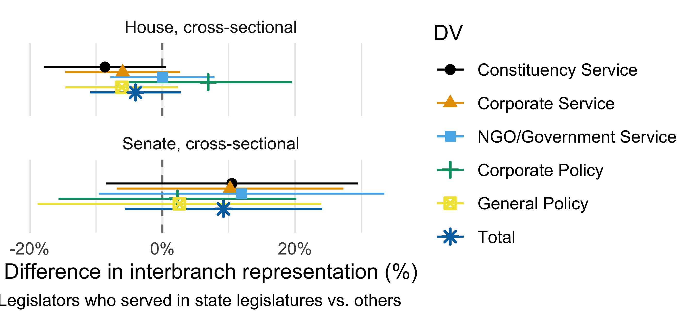
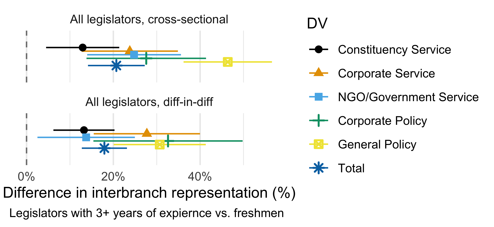
These results partly support Hypothesis 2A: experience in Congress is associated with more interbranch representation, but prior state legislative experience is not.
More Staff, More Interbranch Representation
The largest difference in office capacity in Congress is between the chambers. Senate offices employ far more staff than House offices, and senators’ office budgets grow with state population. As we noted in Chapter 5, this means the large effects of state population on senators’ interbranch representation combine demand and capacity. Figure 6.5 shows that, holding constant the other variables in our models, in the cross-sectional models we find that senators do about 30% more corporate service, roughly twice as much nonprofit/local government service and corporate policy work, and about 80% more general policy work. Somewhat surprisingly, we see no significant differences in individual constituency service. Within legislators (leveraging politicians who serve in both the House and Senate during their careers), only general policy work rises significantly. We do not attribute these cross-chamber differences to capacity alone, because chamber differences also include differences in constituency size, term length, and institutional role. The staff measures we turn to next vary within each chamber and so offer a cleaner test of Hypothesis 2B.
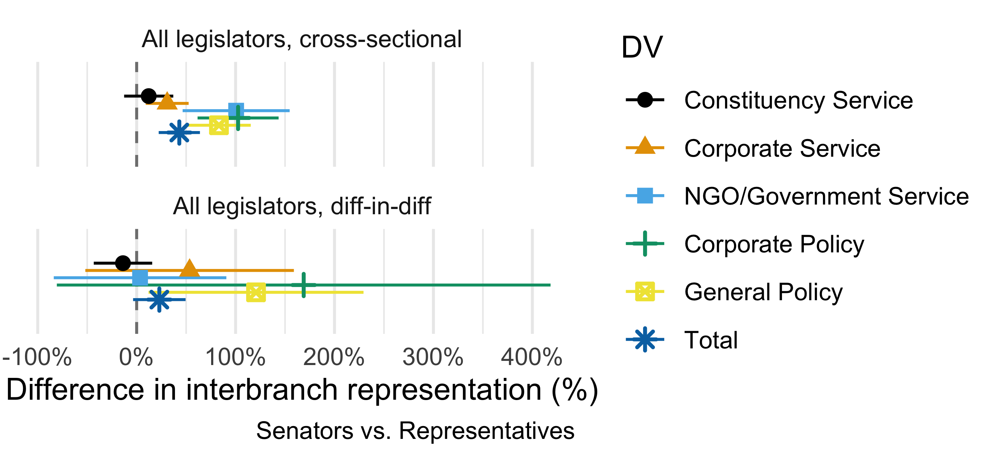
Figure 6.6 shows the marginal effect of additional staff for all legislators (Figure 6.6 (a)) and for senators only (Figure 6.6 (b)).
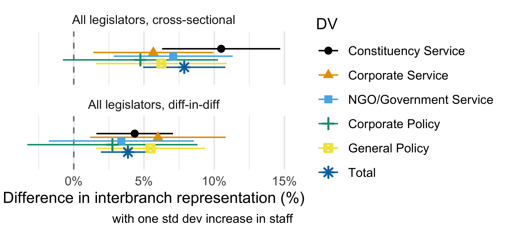
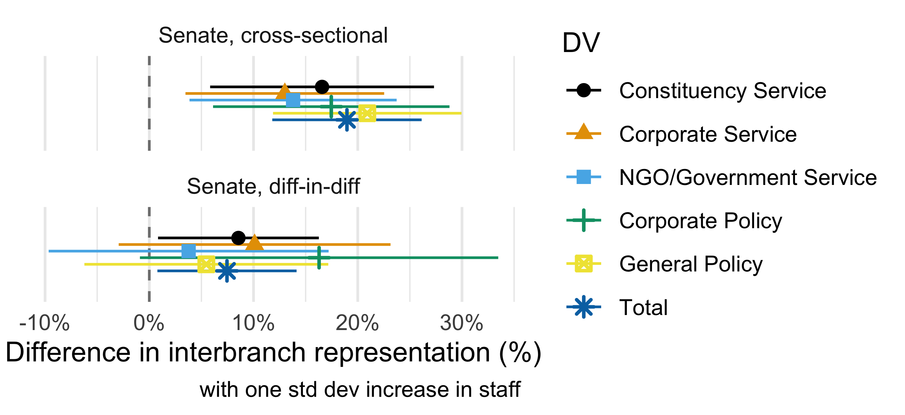
Across all legislators, offices with more staff do more constituency service on behalf of individuals, businesses, and nonprofits and local governments, as well as more general policy work (Figure 6.6 (a), upper panel). A one-standard-deviation increase in staff is associated with about 10% more individual constituency service and 5–7% more of the other types. If we compare the same legislator’s office before and after it adds staff (Figure 6.6 (a), lower panel), a larger staff is associated with more individual constituency service, corporate constituency service, and general policy work. Among senators, more staff is associated with more of all five types of interbranch representation, with increases of roughly 13–20% (Figure 6.6 (b), upper panel). Within the same senator’s office over time, however, only individual constituency service increases significantly as staff grows (Figure 6.6 (b), lower panel).
Figure 6.7 shows the marginal effects of total staff experience (Figure 6.7 (a)) and average staff experience (Figure 6.7 (b)). Cross-sectionally, total staff experience is most strongly associated with policy work. A one-standard-deviation increase in the total amount of staff experience in a legislative office is associated with a 15% increase in the amount of general policy work that that legislator’s office performs as part of interbranch representation. Importantly, this applies only to general policy work. This relationship also holds when comparing the same legislator’s office over time. As the total experience of a legislator’s staff grows, their office does about 33% more general policy work (Figure 6.7 (a), lower panel). Total staff experience is not significantly related to any other type of interbranch representation in either design.
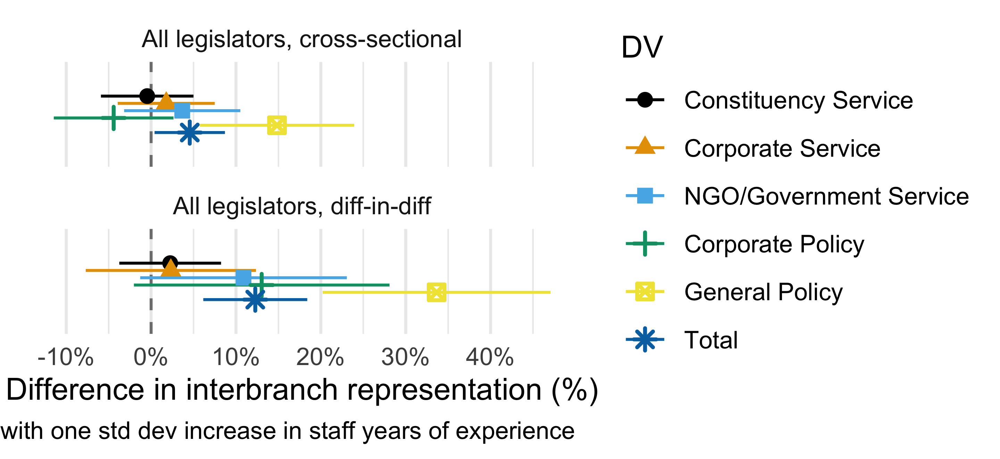
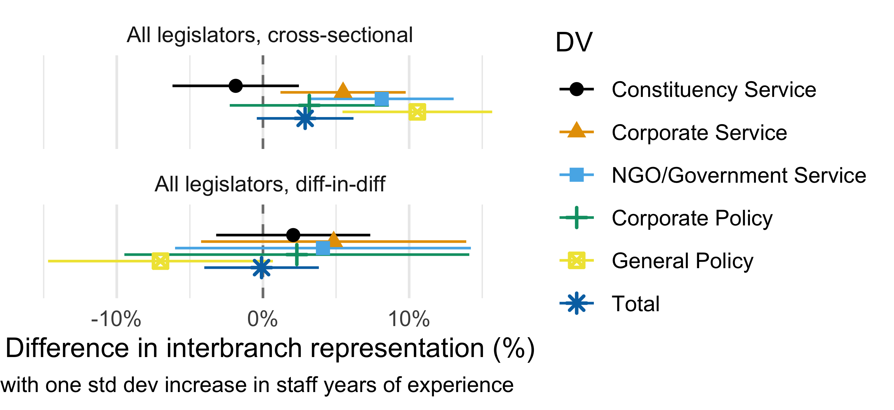
Average staff experience, on the other hand, is positively associated with corporate constituency service and nonprofit/local government constituency service in addition to general policy work. A one-standard-deviation increase in average staff years of experience is associated with a 5% increase in corporate constituency service, an 8% increase in nonprofit/local government constituency service, and a 10% increase in general policy work. None of these relationships hold within the same legislator’s office over time, however (Figure 6.7 (b), lower panel), suggesting that they may reflect differences between offices whose staff stay longer rather than the effect of experience itself. Given that corporate and nonprofit constituency service are both slightly more “specialized” forms of constituency service that may require deeper knowledge of the district to perform well, the cross-sectional relationship between staff experience and each of these forms of interbranch representation is not surprising.
However, the lack of a relationship between total staff experience and any form of constituency service, as well as average staff experience and individual constituency service, is surprising and contradicts our expectations in Hypothesis 2B. One reason for caution in interpreting these null results is measurement. As noted above, our data undercount staff experience gained before 2011, which likely understates differences in experience across offices and makes relationships harder to detect. Measurement error alone, however, cannot explain why staff experience is consistently related to general policy work but not to individual constituency service, since the same measures are used for both.
Anecdotal evidence from our data suggests several potential explanations, including other ways in which staff experience might matter for individual constituency service. First are a number of letters in which legislators’ offices appear to be requesting an expedited response from an agency. For instance, several legislators, including David Rouzer (R-NC), Steve Stivers (R-OH), Dick Durbin (D-IL), Jim Jordan (R-OH), Julia Brownley (D-CA), and Matt Cartwright (D-PA) wrote to the Transportation Security Administration (TSA) within the Department of Homeland Security to request expedited assistance for their constituents.4 Most of these requests involved TWIC (Transportation Worker Identification Credential) cards, various types of certifications, and background checks—all ordinary bureaucratic processes that the legislators’ offices were asking the TSA to handle more quickly.
Other requests for expedited handling of constituent cases were for more urgent issues. Our data include nearly 3,000 records of congressional correspondence sent to the VA urging expedited responses for individual constituents requesting assistance obtaining health care and other benefits through the agency. Even the short summaries of correspondence sent to the VA sometimes explained why the request was time-sensitive. Among the letters were requests that the VA expedite claims and payments due to illnesses (including terminal illnesses), “failing health,” advanced age, financial hardships, homelessness, and, in one harrowing letter, suicidality. Still other letters mentioned requests for expedited medical treatments, like hip replacements and liver transplants.
Interestingly, not all of these letters appeared to be about urgent matters. For example, Mike Michaud (D-ME)’s office wrote to the National Park Service on September 23, 2014, on behalf of a constituent who was concerned about property damage at the Statue of Liberty. The letter was tagged with “PLEASE EXPEDITE,” despite not being related to a time-sensitive medical or financial matter like other letters that legislators requested agencies expedite. Not all staff members may know that requesting an expedited response is an option. Presumably, more senior staff members with more experience working with federal agencies in this way may have more pull when it comes to getting agencies to respond. Therefore, while staff experience may not be related to the volume of interbranch representation, it could still matter for how legislators provide interbranch representation to constituents.
A second potential explanation for this relationship comes from letters in which legislators’ offices are sending additional information about an ongoing case to a federal agency. There are a number of reasons why these followup letters may be necessary, one of which could be that they are being sent by more junior staffers who did not collect all necessary information from constituents to send to the agency initially. Thus, if some congressional offices have less experienced staff who do more interbranch representation for this reason, it could cancel out any effects of a positive relationship between staff experience and the volume of interbranch representation that legislators provide.
Collectively, the staff findings raise the possibility that congressional staff can quickly gain the skills needed for interbranch representation, particularly for individual casework. If so, legislators could provide more of this service simply by hiring more staff. This possibility may also help explain the start-up costs that new legislators face (Judge-Lord et al. 2026). New offices must hire and train staff before they can take on a full casework load, so part of the lower interbranch representation we see in a legislator’s first two years may reflect offices that are slowly being built rather than staff who lack experience.
Together, these results partly support Hypothesis 2B. Offices with more staff do more of nearly every type of interbranch representation. When the same legislator’s office grows, it does more constituency service on behalf of individuals and businesses and more general policy work. Staff experience appears to matter more selectively. The total experience of a legislator’s staff is consistently associated with more general policy work, both across offices and within the same office over time. More experienced staff also do more service for businesses, nonprofits, and local governments, but only in cross-sectional comparisons across offices. Staff experience is not associated with more individual constituency service in either design. This selective experience finding may have to do with how staff experience is distributed across different roles. If, for example, more experienced staff tend to serve in more policy-focused roles, that could explain this finding. In Chapter 7, we’ll return to this question of staff allocation across roles.
Committee Leadership Positions Increase Policy Work
Next, we focus on the capacity that comes from committee positions. Committee leadership positions are associated with substantially more interbranch policy work, which includes work like commenting on proposed agency rules and conducting oversight investigations (Figure 6.8). Committee chairs do more than twice as much general policy work as non-chairs (Figure 6.8 (a), upper panel). Much of this cross-sectional difference reflects the position itself: legislators increase their general policy work by over 75% when they gain a committee chair position (Figure 6.8 (a), lower panel). Differences in corporate policy work are much smaller (+25%) and not statistically significant in the within-legislator design. Gaining a committee chair position is associated with neither more nor less constituency service.
Ranking minority positions have similar effects at a slightly smaller scale (Figure 6.8 (b)). Ranking members do 65% more general policy work than other legislators, and most of that cross-sectional difference again reflects the position: when a legislator becomes a ranking member, their general policy work increases by nearly 50%. As with chairs, differences in corporate policy work are much smaller (+25–30%) and not statistically significant in the within-legislator design.
Subcommittee chair positions are associated with much smaller and mostly not statistically significant increases in interbranch representation (Figure 6.8 (c)), possibly because subcommittee chairs cannot direct staff as committee chairs and (often) ranking minority members can. Committee staff, and the capacity that accompanies them, may therefore be partly responsible for the relationship between committee leadership and general policy work.
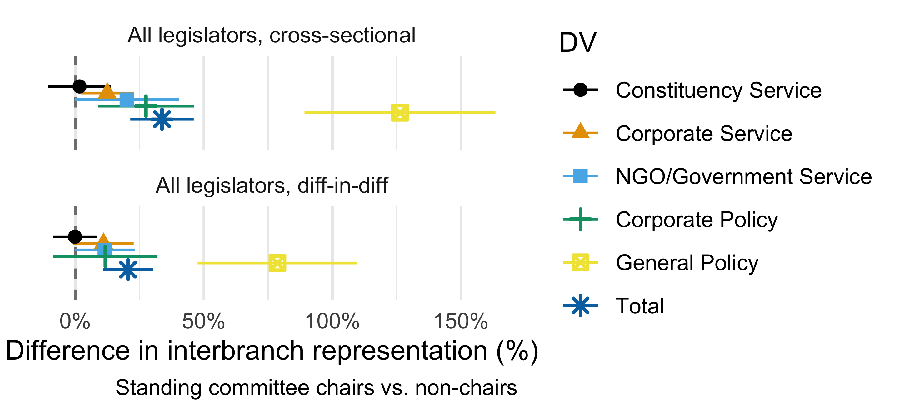
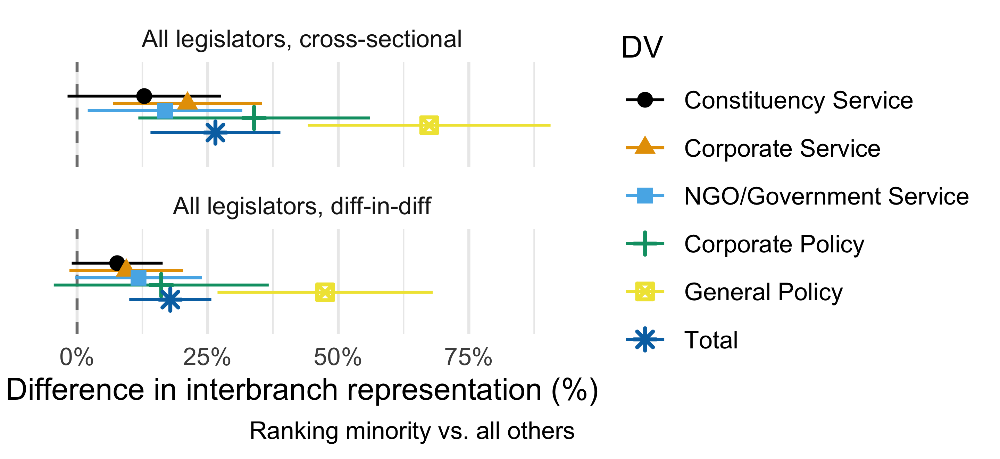
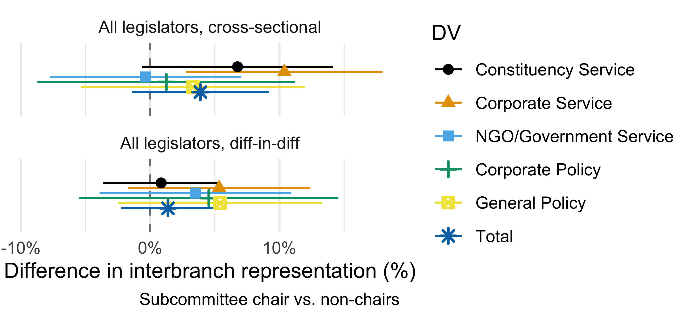
As an example of the role that committee leadership positions play in policy-related interbranch representation, we can examine how the general policy work of Robert C. Scott (D-VA) changed after he became the ranking member (and later chair) of the House Committee on Education and the Workforce. Prior to 2015, when he became the ranking member of this committee, he sent a relatively small number of letters to agencies within the Department of Labor (DOL), including the DOL’s Office of Congressional and Intergovernmental Affairs (OCIA) and the Office of Federal Contract Compliance Programs (OFCCP). Scott sent 51 letters to the OCIA between 2007 and 2014, none of which involved general policy work. The vast majority concerned individual constituency service. Between 2015 and 2019, however, after becoming the ranking member (and later chair) of the House Committee on Education and the Workforce, Scott sent 54 letters to the OCIA, 28 of which were about policy (including thank-you letters to DOL officials for testifying at hearings). Similarly, Scott sent only one letter to the OFCCP between 2007 and 2014, on behalf of a constituent (regarding the issue of “unlawful harassment” that the constituent was facing). But between 2015 and December of 2017, Scott sent five letters to the OFCCP, all about policy. In this case, Scott’s committee position gave him a clear reason to become more involved in general policy work through interbranch representation. Interestingly, even if he had a preexisting interest in labor policy, it was not apparent from the letters contained in our data.
Together, these results support Hypothesis 2C for policy work but not for constituency service: committee chairs and ranking members do substantially more general policy work, and they increase that work when they gain these positions.
Reporting Committee Members Do More Policy Work with Their Agencies
Legislators who serve on committees to which an agency reports do nearly twice as much general policy work with that agency, and more constituency service with that agency, ranging from slightly more individual constituency service to 35% corporate service, and 13% more nonprofit and local government service (Figure 6.9, upper panel). For general policy work, a good share of this difference reflects committee service itself: legislators who join a committee increase their policy work with the agencies that report to it by 40% (Figure 6.9, lower panel). Differences in constituency service and corporate policy work are not significant in the within-legislator design. This suggests that legislators who join the committees to which an agency reports were already doing constituency service and corporate policy work with that agency, consistent with the preexisting interest or expertise that may have drawn them to the committee in the first place.
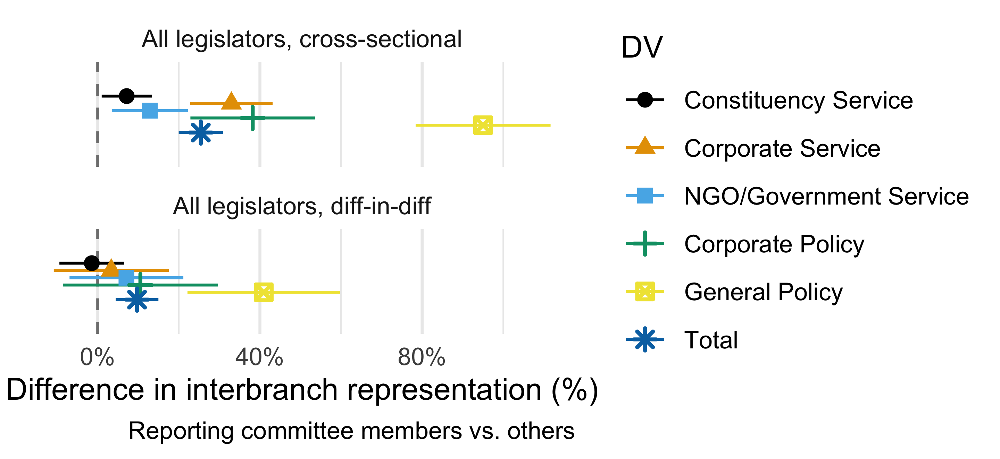
These results support Hypothesis 2D for general policy work. For constituency service, the cross-sectional association likely reflects which legislators join these committees rather than what committee service enables.
Summary of Results
In Table 6.2 we summarize our results. We find that member office capacity appears to play an important role in shaping what offices can do, and we see at least partial support for all of our capacity hypotheses. Capacity that comes from time in Congress and from a larger staff increases many types of interbranch representation, including constituency service on behalf of individuals, and these relationships hold when we compare the same legislator over time. Somewhat surprisingly, while legislators’ experience that comes from time in Congress appears to increase capacity, previously serving in a different legislative body—a state legislative role—does not.
| Indicator | Individual service | Corporate service | Nonprofit/ local gov’t service | General policy | Corporate policy |
|---|---|---|---|---|---|
| Hypothesis 2A (Experience): partly supported. Time in Congress matters; prior state legislative service does not. | |||||
| More than two years in Congress | ↑/↑ | ↑/↑ | ↑/↑ | ↑/↑ | ↑/↑ |
| Prior state legislature† | n.s./– | n.s./– | n.s./– | n.s./– | n.s./– |
| Hypothesis 2B (Staff): partly supported. Staff size matters broadly; staff experience mainly for general policy work. | |||||
| Senate (vs. House) | n.s./n.s. | ↑/n.s. | ↑/n.s. | ↑/↑ | ↑/n.s. |
| Staff count | ↑/↑ | ↑/↑ | ↑/n.s. | ↑/↑ | n.s./n.s. |
| Staff count (Senate only) | ↑/↑ | ↑/n.s. | ↑/n.s. | ↑/n.s. | ↑/n.s. |
| Total staff experience | n.s./n.s. | n.s./n.s. | n.s./n.s. | ↑/↑ | n.s./n.s. |
| Average staff experience | n.s./n.s. | ↑/n.s. | ↑/n.s. | ↑/n.s. | n.s./n.s. |
| Hypothesis 2C (Committee leadership): supported for general policy work. Gaining a full-committee post increases general policy work; corporate policy differences are cross-sectional only. | |||||
| Committee chair | ↑/↑ | ↑/n.s. | |||
| Ranking member | ↑/↑ | ↑/n.s. | |||
| Subcommittee chair | n.s./n.s. | n.s./n.s. | |||
| Hypothesis 2D (Reporting committee): supported for general policy work. A new seat increases general policy work with that agency; corporate policy differences are cross-sectional only. | |||||
| Reporting committee seat | ↑/↑ | ↑/n.s. | |||
A second pattern that emerges is that the capacity that comes from committee work, whether a leadership position or a seat on an agency’s reporting committee, increases general policy work but not constituency service. Legislators with these positions do more of almost everything in cross-sectional comparisons, but when the same legislator gains a position, only their general policy work increases. This pattern is consistent with the idea that, in the absence of a strict seniority system for selecting committee leaders, higher performing legislators (with greater capacity) are being selected into these roles. However, their capacity for non-policy work (outside the scope of the committee) is not increased by serving in these roles. Across nearly every source of capacity, general policy work is the type of interbranch representation most responsive to an office’s ability to do more.
6.4 Conclusion: Capacity-Constrained Congressional Offices
Our findings offer support for Hypothesis 2, though not for every form of capacity or every type of interbranch representation. Experience in Congress increases every type of interbranch representation, but prior service in a state legislature does not (Hypothesis 2A). Staff size matters broadly, while staff experience matters mainly for general policy work (Hypothesis 2B). Committee leadership positions (Hypothesis 2C) and reporting committee seats (Hypothesis 2D) increase general policy work, but their cross-sectional associations with constituency service likely reflect which legislators hold these positions rather than what the positions make possible. Our two research designs are central to these conclusions. Comparisons across legislators show who does more interbranch representation; comparisons within the same legislator over time show which forms of capacity change what an office does. Some measures, like prior state legislative service, can only be compared across legislators, and our measures of staff experience undercount experience gained before 2011, so the absence of a relationship between staff experience and constituency service should be interpreted with caution.
Capacity explains some of the variation in interbranch representation that demand leaves unexplained, but it does not explain all of it. Legislators with similar capacity, facing similar constituent demand, still vary considerably in how much interbranch representation they do and what kinds.
These findings also have implications for how Congress represents constituents, which we return to in Chapter 8. If larger staffs lead to more constituency service, then the decline in House office budgets since 2010 (Reynolds 2020) has likely reduced the help constituents receive with federal agencies. If staff can gain the skills needed for this work relatively quickly, then investments in staff numbers may matter more for constituency service than investments in retaining experienced staff. However, experienced staff may matter more for policy work. And because experience and committee positions concentrate capacity among more senior legislators, constituents of newer members may receive less interbranch representation simply because of when their legislator arrived in Congress.
These legislative capacity factors have the potential to impact not just interbranch representation, but other areas of legislators’ work. One question we will return to in the concluding chapter is whether the patterns of interbranch representation we observe correlate with other forms of legislative representation. For example, do high interbranch representation performers also perform more effectively legislatively and as good fundraisers? A large body of formal theory literature examines elections as selection mechanisms for high- or low-performing politicians (Dewan and Shepsle 2011), and under some assumptions might imply correlated performance across work areas.
Capacity determines what congressional offices can do. In Chapter 7, we turn to the third element of our framework, strategy—which is what legislators choose to do. In particular, we examine how legislators’ partisan, electoral, and institutional incentives shape what type of work legislators do (constituency service or policy), and on whose behalf they work (corporate or general interest). Among those choices is how legislators allocate the capacity they have, including how they divide their staff between constituency service and policy work.
Indeed, we can point to some cases in which after members left Congress, their staff continued to represent their district. For example, in the period between Rep. Patrick Meehan (R-PA) resigning from Congress in April of 2018 and Rep. Mary Gay Scanlon (D-PA) assuming office in November, USCIS received 51 requests from the office that the agency tagged as from “Vacant, Meehan” along with dozens of other letters from staff whose members were no longer serving and did not yet have a replacement. These letters end up getting dropped from our legislator-level analyses.↩︎
Alternatively, the constituent could have specifically requested that Sanders’s office forward their comment to a relevant agency, which would accord with our expectations about constituent knowledge and interbranch representation described in the previous chapter.↩︎
Committee assignment and position data are available at https://github.com/judgelord/committees. We cross-checked and augmented these data with chair and subcommittee chair indicators compiled by Volden and Wiseman (2014) and Volden and Wiseman (2018) from the Almanac of American Politics.↩︎
A summary of a letter from Kirsten Gillibrand (D-NY)’s office also contained instructions to expedite; however, the actual text was “Per OLA [Office of Legislative Affairs], please expedite,” suggesting that TSA, not Gillibrand’s office, decided to expedite this request, which had to do with lost luggage.↩︎